Deep Izakaya Menu Guide
居酒屋メニューガイド
Explore the authentic taste of Japan. Use this guide to order and enjoy like a local! 日本のリアルな味を探求しましょう。このガイドを使って、日本人のようにお酒と料理を楽しんでください！
1. Live & Entertaining / ライブ感・エンタメ系
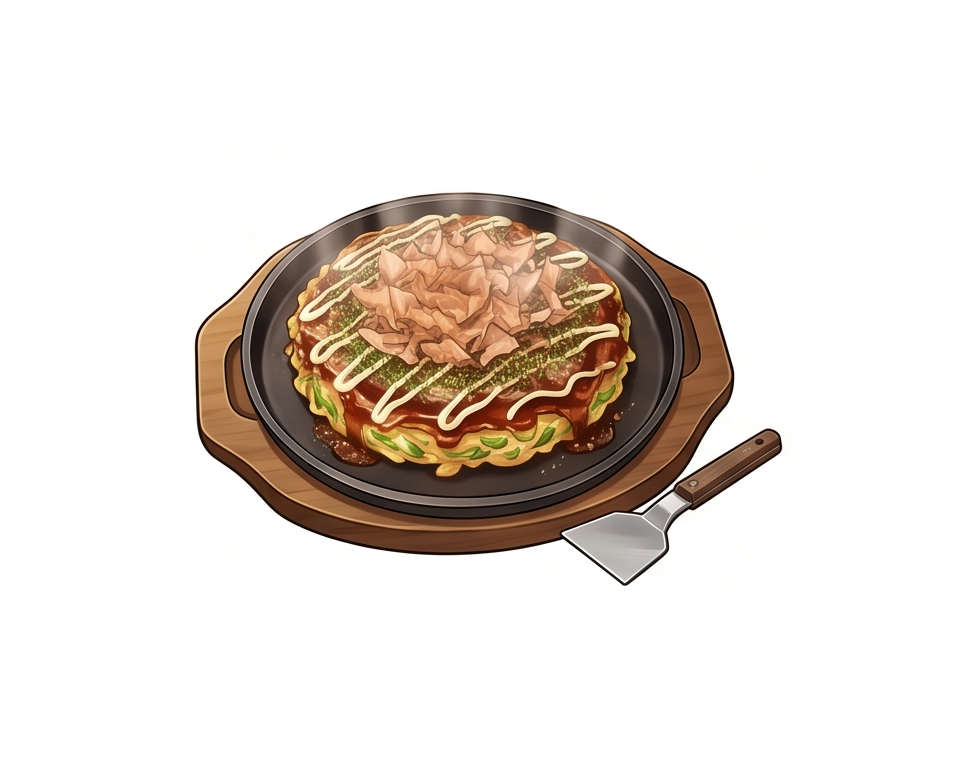
Okonomiyaki & Monjayaki お好み焼き＆もんじゃ焼き
What it is: Savory Japanese pancakes and runny batter cooked right in front of you on a tabletop iron griddle.
卓上の鉄板で自分たちで焼く、具沢山のしょっぱいパンケーキや、とろとろの生地の鉄板焼き。
How to eat: Use the small metal spatula (kote) to cut it and eat directly from the hot griddle!
食べ方： 小さな金属のヘラ（コテ）を使って切り分けて食べましょう！
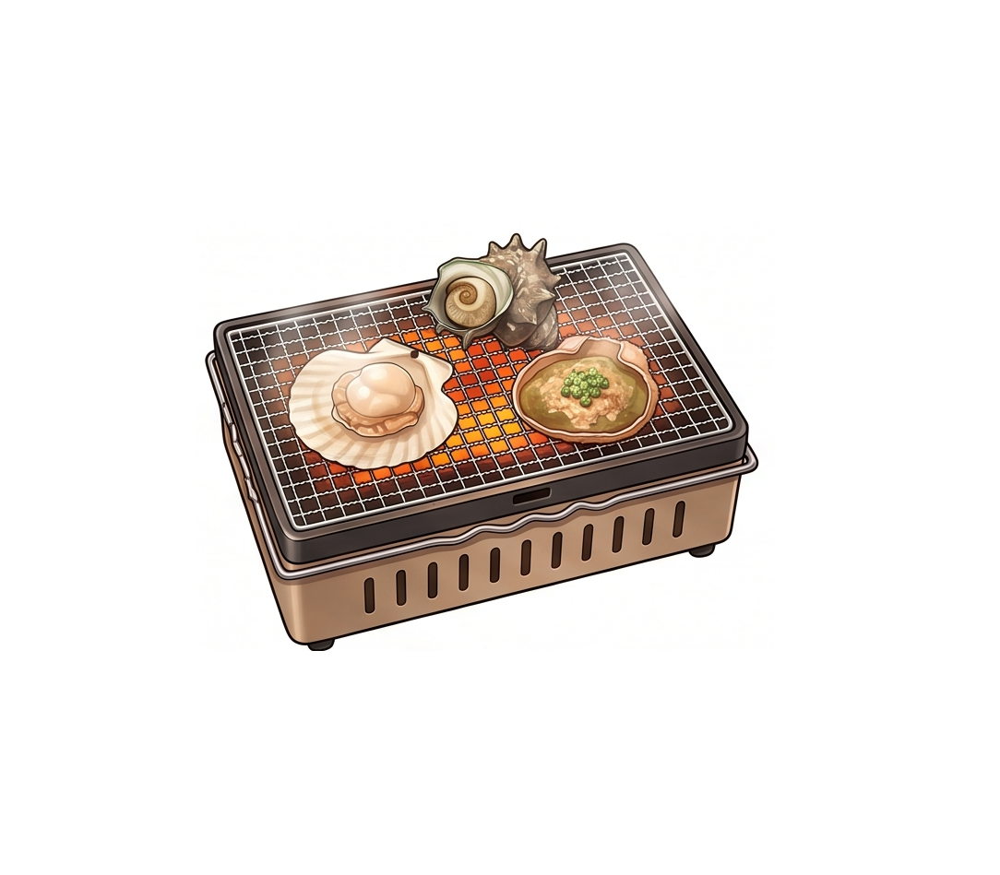
Hamayaki (Tabletop Seafood) 卓上での浜焼き
What it is: Fresh scallops, turban shells, and crab miso grilled on a small personal net at your table.
とは： 新鮮なホタテやサザエ、カニ味噌などを、テーブルの上の小さな網で焼く海鮮バーベキュー。
How to eat: Watch it bubble! Add a few drops of soy sauce when the shell opens, and eat while hot.
食べ方： 貝が開いてグツグツしたら、醤油を数滴たらして熱いうちに食べます。
2. Skewers & Classics / 串もの・定番ローカル系
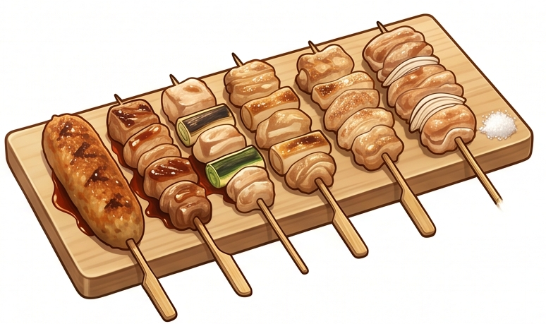
Yakitori 焼き鳥
Charcoal-grilled chicken skewers. Try unique parts like hearts or gizzards!
炭火で焼いた鶏の串焼き。ハツや砂肝などの珍しい部位にも挑戦！
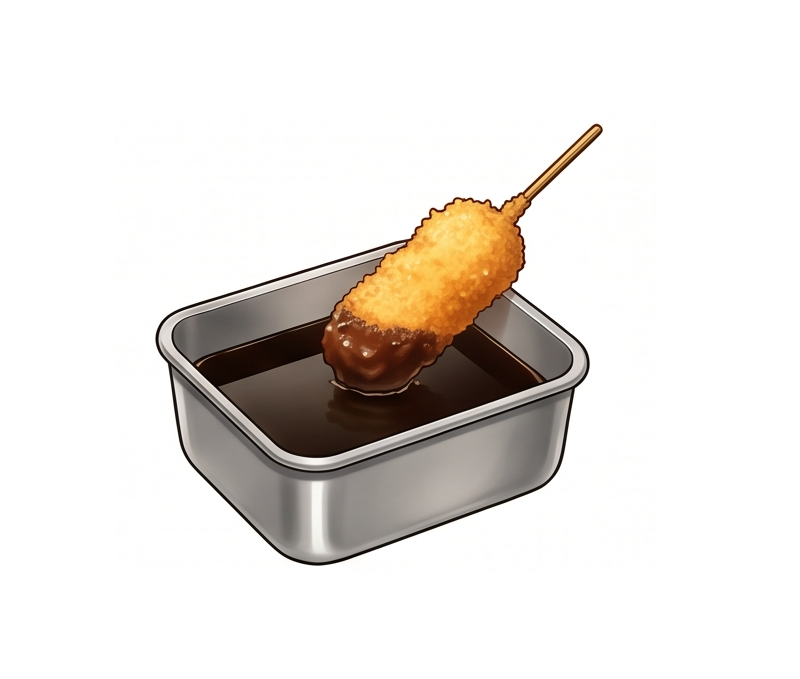
Kushikatsu 串カツ
Deep-fried meat and vegetable skewers with a crispy golden batter.
肉や野菜を細かいパン粉でサクッと揚げた串揚げ。
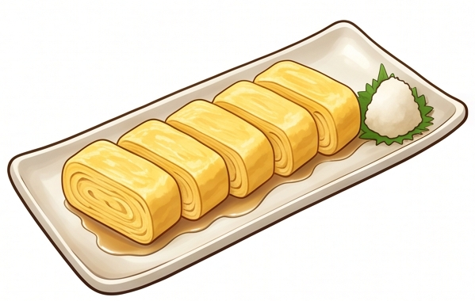
Dashimaki Tamago だし巻き卵
A rolled omelet made with Japanese soup stock (dashi). Very fluffy and juicy.
出汁をたっぷり含ませて何層にも巻いた、フワフワでジューシーな卵焼き。
3. Deep & Adventurous / ディープ・挑戦系
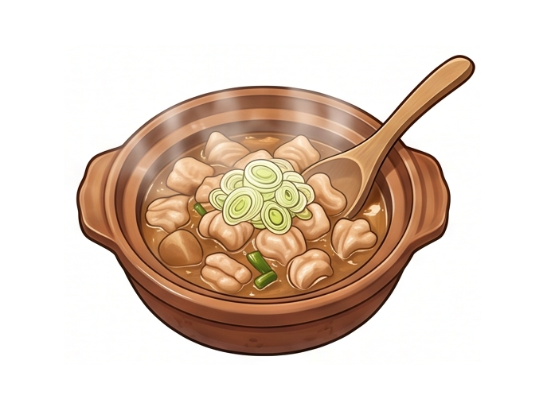
Motsu-nikomi もつ煮込み
Pork or beef intestines stewed until melt-in-your-mouth soft with miso or soy sauce.
豚や牛の内臓を、味噌や醤油でホロホロになるまで煮込んだ赤提灯の魂。
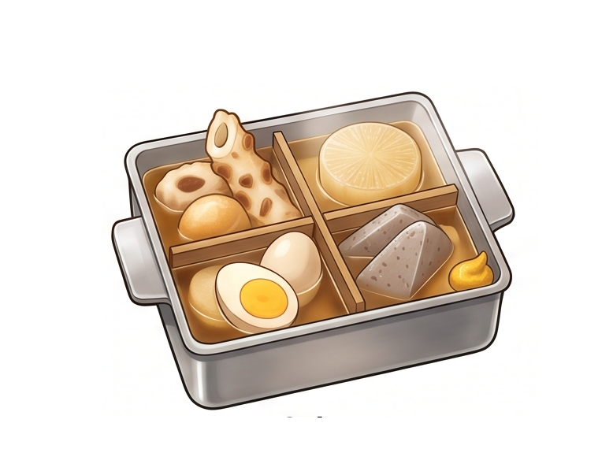
Oden おでん
Various ingredients like radish, fish cakes, and eggs simmered in a light soy-flavored dashi broth.
大根や練り物、卵などを出汁でじっくり煮込んだ鍋料理。お好みでからしをつけて食べます。
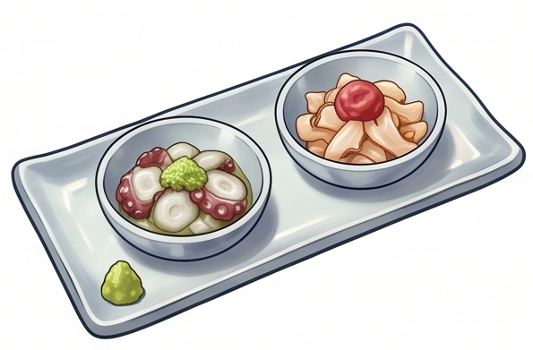
Tako-wasa / Ume-suisho タコわさ・梅水晶
Raw octopus with spicy wasabi, or crunchy shark cartilage with sour plum. The ultimate drink snacks.
生のタコのワサビ和えや、サメの軟骨の梅肉和え。食感を楽しむ究極のお酒のアテ。
4. The "Shime" Culture / 〆（シメ）の文化
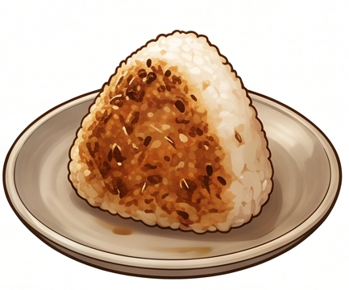
Yaki-onigiri 焼きおにぎり
A rice ball coated in soy sauce and grilled until crispy on the outside. A perfect savory finish.
醤油を塗って表面をカリッと香ばしく焼いたおにぎり。飲んだ後に最高です。
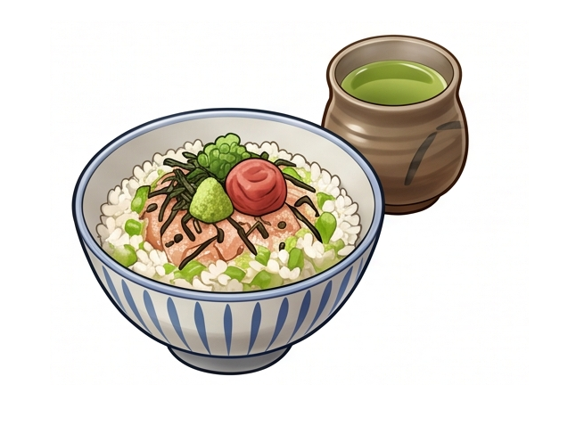
Ochazuke お茶漬け
A bowl of rice topped with savory ingredients, with hot green tea or dashi broth poured over it.
ご飯の上に具材を乗せ、温かいお茶や出汁をかけた、胃に優しい〆の一品。
Japanese Alcohol Guide
日本のお酒ガイド
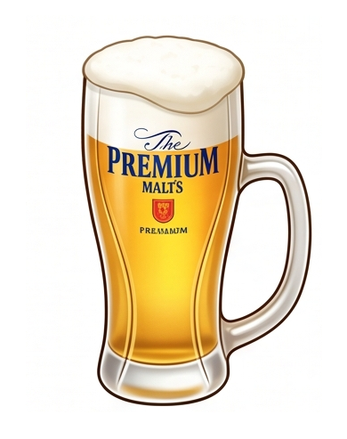
Nama Beer (Draft Beer) 生ビール
Always the first drink! Japanese draft beer is famous for its crisp taste and perfect, creamy foam head.
「とりあえず生！」でおなじみ。日本のビールはキレがあり、クリーミーな泡が特徴です。
How to order: "Toriaezu, Nama!" (I'll start with a draft beer!)
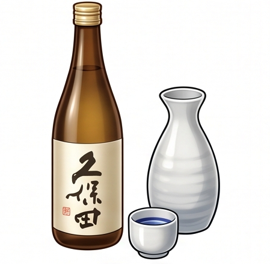
Nihonshu (Sake) 日本酒
Fermented rice wine. Can be enjoyed crisp and cold (Reishu) or warmly comforting (Atsukan) depending on the season.
お米から作られる醸造酒。季節に合わせて、キリッと冷やした「冷酒」や、温かい「熱燗」で楽しみます。
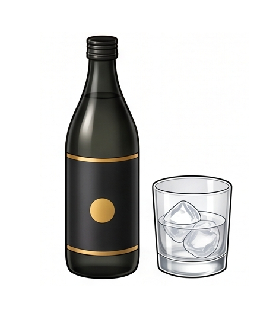
Shochu (Imo / Mugi) 焼酎（芋・麦）
A distilled spirit. "Imo" (sweet potato) has a rich, earthy aroma, while "Mugi" (barley) is clean and easy to drink. Often mixed with water, ice, or soda.
日本の蒸留酒。香りの強い「芋」と、スッキリ飲みやすい「麦」が代表的。ロック、水割り、炭酸割り、何でもOK。
Umeshu (Plum Wine) 梅酒
A sweet, fruity liqueur made by steeping Japanese plums in alcohol and sugar. Very popular mixed with soda (Umeshu Soda).
梅をアルコールと砂糖に漬け込んだ甘くてフルーティーなお酒。ロックまたは炭酸で割る「梅酒ソーダ」が大人気です。